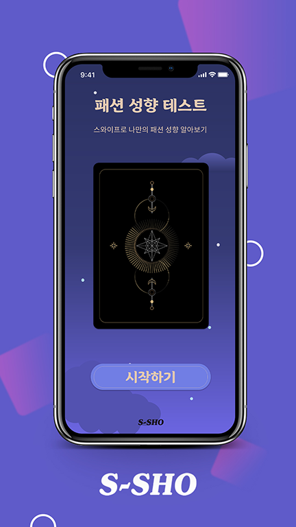
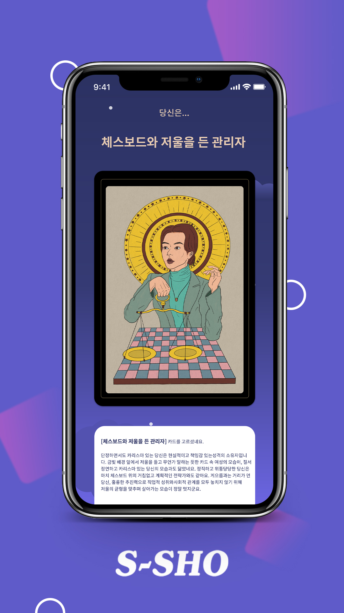
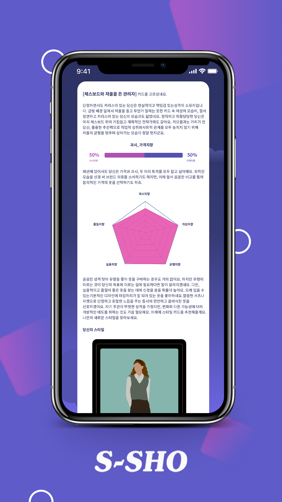

About
A playful mobile flow built for fast, sharable moments.
A mobile-first fashion personality test created as a lightweight viral marketing experience for the S-SHO brand. I designed high-fidelity interface screens, a cohesive visual system, and production-ready assets — prioritizing polished visuals and quick engagement over a traditional low-fidelity UX cycle.
Product Design
Mobile UI
Visual Design
Viral Marketing
Design Focus
- Created a playful mobile visual direction for a fashion personality-test flow.
- Designed high-fidelity screens optimized for quick engagement and social sharing.
- Delivered polished, high-fidelity screens under a fast-paced timeline, prioritizing visual clarity, mobile flow, and launch-ready assets.



Selected interface screens — start, card reveal, and personality result
Walkthrough of the full mobile flow